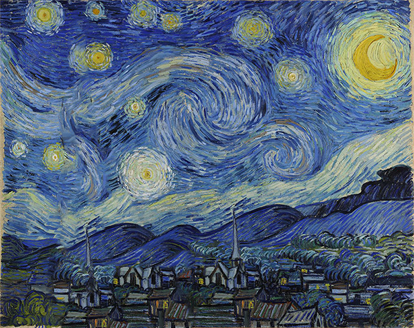
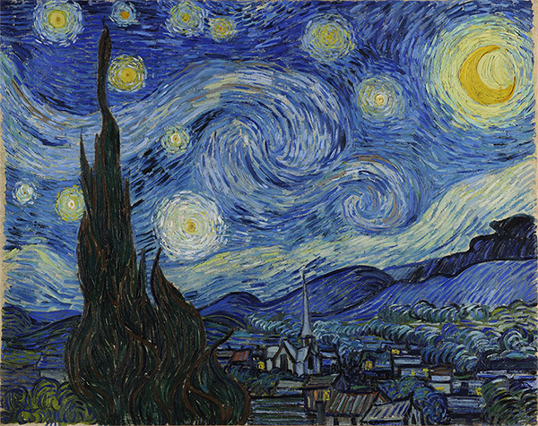
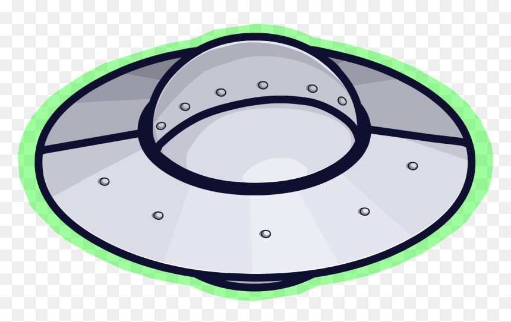
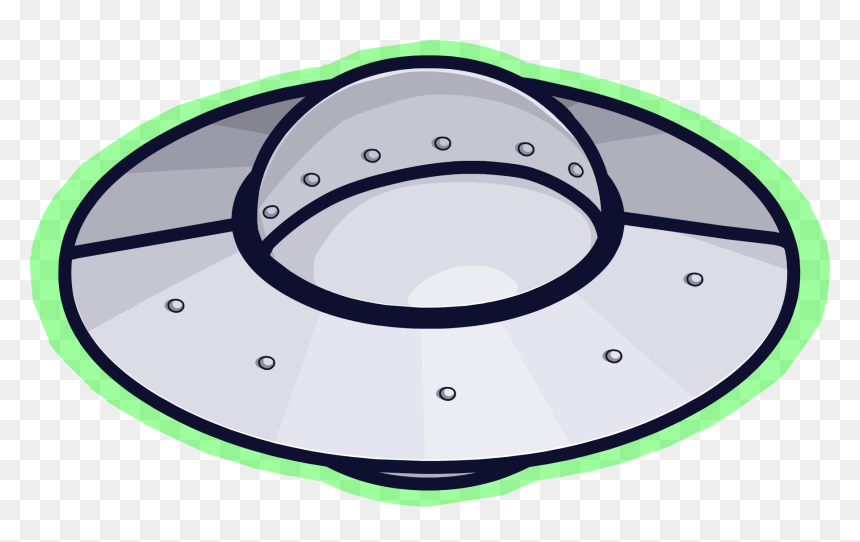

Moving art
Giving a already exciusting painting, new life, by using it in an animatiom
Link for the finished animation:
http://mnd-design.dk/Animate/Starry_night/starry%20night.html
Painting used for the animation and Pictures used during animation
  
